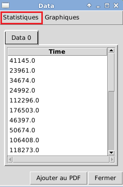
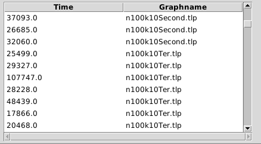
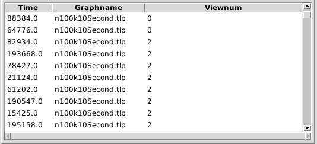

Statistiques

L'exécution des statistique se fait depuis la fenêtre d'affichage des données : 
 Shapiro-Wilk
Shapiro-Wilk
SELECT is failed AS Error_Rate_n100k10Louvain
FROM ref.donnee
WHERE graphname = 'n100k10Louvain.tlp'
- Student, Wilcoxon et Pearson
Veillez à bien utiliser un ORDER BY pour distinguer les données en plusieurs groupes (pas plus de deux pour Student et Wilcoxon) et placez les données chiffrées à gauche, les chaînes de caractère à droite :
SELECT Time, graphname
FROM ref.donnee
ORDER BY user

- Kruskall-Wallis
Si vous devez faire plusieurs distinctions de groupes, placez la caractéristique de distinction la plus 'précise', le plus à droite possible. Exemple ci-dessous avec une requête dont la caractéristique de distinction la plus précise est 'usedview' :
SELECT is failed, graphname, usedview
FROM ref.donnee

Stat'nDat - 11 Mai 2015 Accueil Représentations graphiques